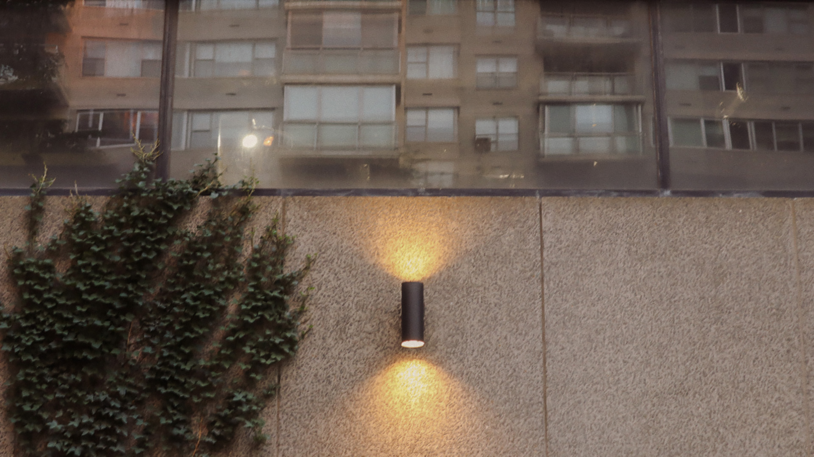

For this image, I decided to shoot this building with a warped reflection of buildings that stand in front of it. I didn’t have any particular idea of what I wanted as my “main” images for this assignment. When I saw this building and the reflection, I initially thought “wow, that’s really an interesting composition… let me take a quick shot of this.” As I walked closer to this building face, I realized the blank face of the building plus the overgrown ivy that hangs on it contrasts the really warped reflection of those other buildings. A really nice combination (or clash, depending on how you view it) of something simple in nature and something “chaotic”. Ideally to edit this image, I went for a simple lowering of the contrast, and adjusting the coloring to be more warm and yellow to give off a vintage look that a film camera may capture.
 Go to next image Go to homepage